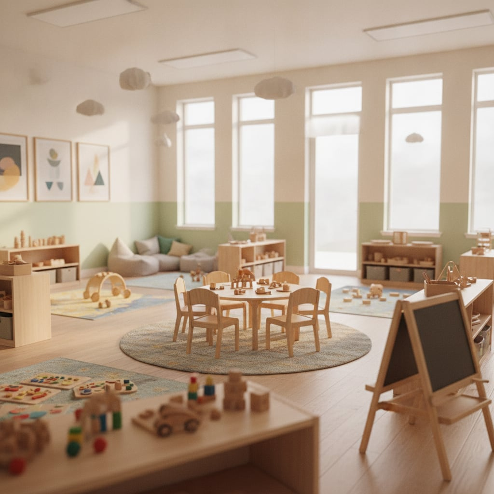
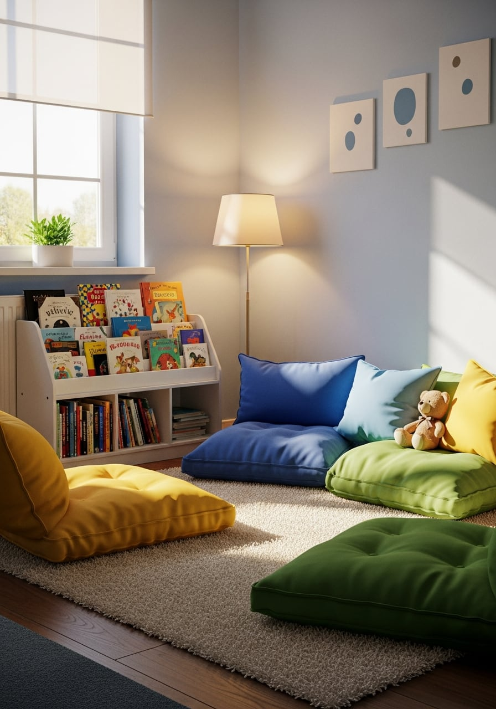
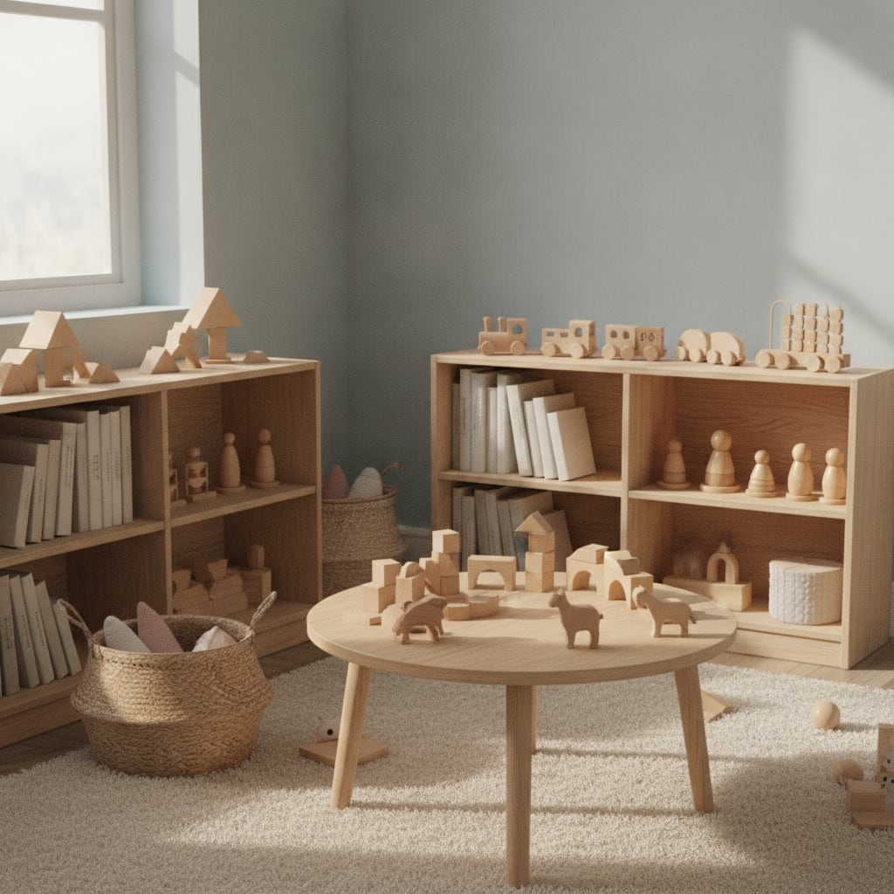
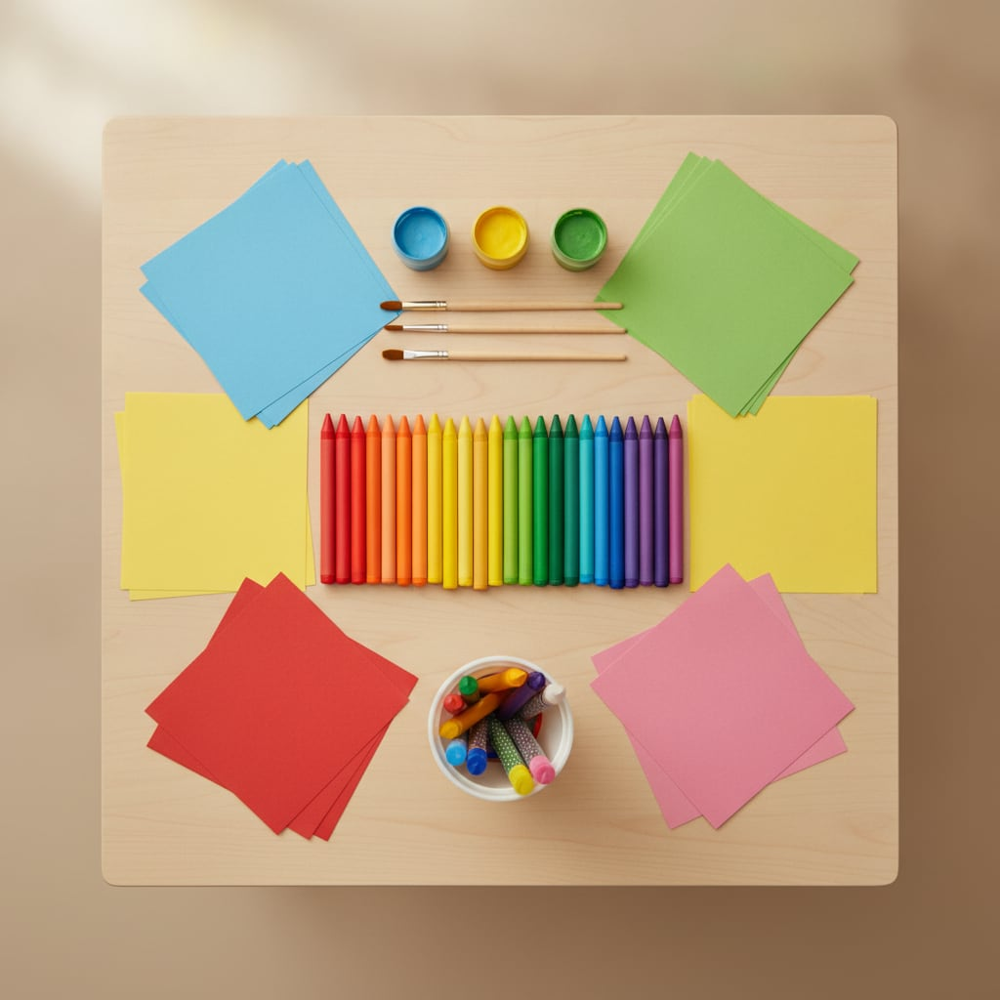

Një botë e vogël, plot dije.
Kopsht dhe çerdhe në Tiranë që nga viti 2011. Një vend i ngrohtë dhe i sigurt ku fëmijët mësojnë, luajnë dhe rriten të lumtur.

Që nga viti
0
Mbi dymbëdhjetë vite kujdes për fëmijët e Tiranës. Në Porcelan, në një ambient të mbyllur e të sigurt, ku çdo prind e di se fëmija i tij është në duar të mira.
Grupe të vogla, edukatore që i njohin fëmijët me emër dhe një ritëm dite që përzien lojën me të mësuarit. Këtu fëmijët vijnë me dëshirë dhe largohen duke folur për atë që bënë.
Çfarë ofrojmë
Nga çerdhja e të vegjëlve te përgatitja për shkollë, plus aktivitete që u japin fëmijëve diçka të tyren.
- 01
Çerdhe
Kujdes i ngrohtë për të vegjlit, me gjumë, ushqim dhe lojë në një ritëm të qetë.
- 02
Kopsht
Grupe sipas moshës, ku fëmijët mësojnë të rrinë bashkë, të ndajnë dhe të zbulojnë.
- 03
Klasa parashkollore
Përgatitje e qetë për klasën e parë: shkronja, numra dhe shprehi pune.
- 04
Anglisht & pikturë
Anglishtja përmes lojës dhe piktura që u lë vend imagjinatës.
- 05
Balet
Lëvizje, ritëm dhe ekuilibër, në orë baleti që fëmijët i presin me padurim.
- 06
Transport
Marrje dhe sjellje me transport, që mëngjeset të jenë më të lehta për prindërit.
Një ditë te KIDS
Mëngjesi nis me pritje në derë dhe një lojë të qetë. Pastaj aktiviteti i ditës: shkronja e numra, anglisht ose piktura, dhe pak balet kur është radha.
Drekë e ngrohtë, gjumë për të vegjlit, dhe oborr për të dalë jashtë. Në fund të ditës çdo fëmijë largohet me diçka për të treguar në shtëpi.
Hën-Pre 07:30-17:00 · Sht 07:30-13:00

Galeria

Ejani të na njihni
Na vizitoni në Porcelan ose na telefononi për një takim. Do të ishim të lumtur t'ju tregonim ambientet dhe t'ju njihnim me edukatoret.
AdresaRruga Xhanfize Keko, Porcelan, Tiranë
OrariHën-Pre 07:30-17:00 · Sht 07:30-13:00
Telefon+355 69 755 6009
Instagram@kopshti_kids